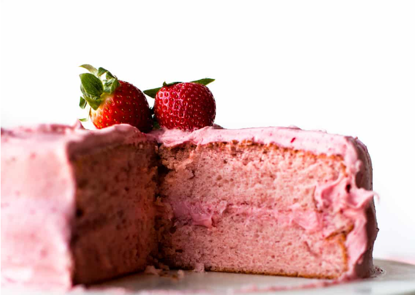

Homemade Strawberry Cake Recipe

Description
The one thing that sets this strawberry cake apart from others?
Reduce fresh strawberry puree down and add to the best white cake batter.
Ingredients
Strawberry Puree
- 1 pound (454g) fresh strawberries, rinsed and hulled
Cake
- 2 and 1/2 cups (285g) cake flour (spooned & leveled)
- 2 teaspoons baking powder
- 1/2 teaspoon baking soda
- 1 teaspoon salt
- 3/4 cup (12 Tbsp; 170g) unsalted butter, softened to room temperature
- 1 and 3/4 cups (350g) granulated sugar
- 5 large egg whites, at room temperature
- 1/3 cup (75g) sour cream or plain yogurt, at room temperature
- 2 teaspoons pure vanilla extract
- 1/2 cup (120ml) whole milk, at room temperature
- 1/2 cup reduced strawberry puree (see step 1)
- optional: 1–2 drops red or pink food coloring
Strawberry Cream Cheese Frosting
- 1 cup (about 25g) freeze-dried strawberries
- 8 ounces (226g) full-fat brick cream cheese, softened to room temperature
- 1/2 cup (8 Tbsp; 113g) unsalted butter, softened to room temperature
- 3 cups (360g) confectioner sugar
- 1–2 Tablespoons milk
- 1 teaspoon pure vanilla extract
- salt, to taste
Instructions
- Make the reduced strawberry puree first, and let cool: Puree 1 pound of rinsed and hulled strawberries.
You should have a little over 1 cup. Stirring occasionally,
simmer the puree over medium-low heat until you’re left with 1/2 cup or slightly more you need 1/2 cup for the cake.
This takes at least 25–35 minutes, but could take longer depending on your pan or how juicy your strawberries were.
Allow to cool completely before using in cake batter.
I always make the reduced puree the day before so it has plenty of time to cool down.
I cover and place in the refrigerator overnight.
Allow it to come back to room temperature before adding to the cake batter.
- Preheat oven to 350°F 177°C. Grease two 9-inch round cake pans, line with parchment paper rounds,
then grease the parchment paper. Parchment paper helps the cakes seamlessly release from the pans.
- Make the cake: Whisk the cake flour, baking powder, baking soda, and salt together. Set aside.
- Using a handheld or stand mixer fitted with a paddle attachment,
beat the butter and sugar together on high speed until smooth and creamed,
about 2 minutes. Scrape down the sides and up the bottom of the bowl with a rubber spatula as needed.
Beat in the egg whites on high speed until combined, about 2 minutes.
Then beat in the sour cream and vanilla extract. Scrape down the sides and up the bottom of the bowl as needed.
With the mixer on low speed, add the dry ingredients until just incorporated.
With the mixer still running on low, slowly pour in the milk *just* until combined.
Do not overmix.
Whisk in 1/2 cup of room-temperature reduced strawberry puree,
making sure there are no lumps at the bottom of the bowl.
The batter will be slightly thick. Stir in food coloring, if desired.
I use 1 small drop of pink gel food coloring
- Pour batter evenly into cake pans. Bake for around 24–25 minutes or until the cakes are baked through.
To test for doneness, insert a toothpick into the center of the cake.
If it comes out clean, it is done.
Allow cakes to cool completely in the pans set on a wire rack.
The cakes must be completely cool before frosting and assembling.
- Make the frosting: Using a blender or food processor, process the freeze-dried strawberries into a powdery crumb.
You should have around 1/2 cup crumbs.
Set aside.
In a large bowl using a hand-held or stand mixer fitted with a paddle or whisk attachment,
beat the cream cheese for 1 minute on high speed until completely smooth and creamy.
Beat in the butter until combined. Add the confectioners’ sugar, strawberry powder, 1 Tablespoon milk,
and vanilla and beat on medium-high speed until combined and creamy.
Add 1 more Tablespoon of milk to slightly thin out, if desired. Taste, then add a pinch of salt if needed.
Yields about 3 cups of frosting.
- Assemble and frost: First, using a large serrated knife,
slice a thin layer off the tops of the cakes to create a flat surface.
Discard (or crumble over ice cream!).
Place 1 cake layer on your cake stand or serving plate.
Evenly cover the top with frosting.
Top with 2nd layer and spread the remaining frosting all over the top and sides.
Refrigerate for at least 45 minutes before slicing.
This helps the cake keep its shape when cutting—it could slightly fall apart without time in the fridge.
- Cover leftover cake tightly and store in the refrigerator for 5 days.